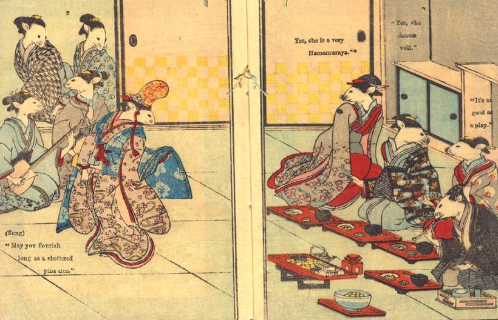

新婚夫婦と花婿の両親が、花嫁の実家を訪問する。花嫁の両親は、宴席を設けて、芸者を呼び、彼らをもてなしている。
著作者：David Thompson／出典：親書誌：U426_nichibunken_0112：Nedzumi no Yome-Iri／日付：2006／資源識別子：U426_nichibunken_0112_0010_0000
Copyright (c)2010- International Research Center for Japanese Studies, Kyoto, Japan. All rights reserved.